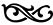

GİRİŞ

Bilinen tarih, “özgürlük” bayrağı altında yürütülen mücadelelerin tarihidir.
Fransız Devrimi’nin etkili düşünürü Jean Jacques Rousseau Toplum Sözleşmesi’ne insanın, özgür doğduğunu yazarak başlıyordu. Fransız Devrimi’nin ünlü üç belgisinden biri özgürlüktü.
Marksizmin çıkış noktası ve nihai hedefi insanın özgürleşmesidir. Komünizm, insanın tüm yaratıcı kapasitesi ile kendisini gerçekleştirmesi amacına yönelen gerçek hareketin adıdır.
Kapitalizme, en başta kapitalist düzende insan özgür olmadığı, dahası özgür olması engellendiği için itiraz ediyoruz.
İnsanın ve insan toplumlarının evrimi; insanın gücüyle zayıflığı, bireyselliğiyle toplumsallığı, etkinliğiyle edilginliği, dünyayı değiştirme yeteneğiyle verili koşulların kimi zaman dar sınırları içindeki çaresizliği, doğayla mücadelede kazandığı görkemli zaferlerle, kendi doğal yaşam koşullarını bozma hoyratlığı arasındaki gerilim çizgisi üzerinde gerçekleşiyor.
Sınıflı toplumlarda insan özgür doğmuyor! Ya da Rousseau’nun dediği gibi, özgür doğuyor, ama her yerde zincirlerine bağlanıyor.
İnsan, bu dünyaya geldiği anda kendisini, yaratılmasında pay ve sorumluluk sahibi olmadığı bir toplumun içinde buluyor. Tam da bu nedenle, birey, sonuçlardan, “kendisini toplumsal olarak yaratan ilişkilerden daha az sorumlu”1dur. Bu önermenin, materyalist tarih anlayışının insana bakışındaki en önemli açılardan biri olduğunu düşünüyorum. İnsanın içinde yaşayacağı koşullar, her birey ve her kuşak için, tümüyle kendisinden önce ve kendisinden bağımsız olarak vardır ve insanın devinim alanını bu verili koşullar çizmektedir. Ancak ne bu sınırlar mutlaktır, ne insan koşulların robotlaştırdığı bir varlıktır ne de tarih yüce bir ruh tarafından çizilmiş bir güzergâhtır.
Bu noktada karşımıza bir dizi soru çıkıyor. İnsan, bir tür varlık olarak, kendi yazgısını eline alabilecek yetenek ve kapasiteye gerçekten sahip mi? Öteki insanlarla barış, uyum, eşitlik içinde yaşaması olanaklı mı? İnsan özünde “iyi” mi, yoksa “kötü” mü?
Bir canlı türü ve toplumsal varlık olan insanın, doğayla ve öteki insanlarla ilişki ve etkileşim içinde kendisini gerçekleştirip gerçekleştiremeyeceği, aynı anlama gelmek üzere özgürleşip özgürleşemeyeceği sorusu, felsefenin ve siyasetin en tartışmalı sorularından biridir.
Daha sonra açmak üzere, iki noktanın altını çizeceğim. Birincisi şu: Tarihsel süreçte, insanı engelleyen koşullarla çok yönlü gelişmesini destekleyen etmenler iç içedir. İnsan, bir yere kadar kendini içinde bulduğu koşulları sürdürmek ve yeniden üretmek zorundadır; ama insanda yeni koşullar ve yeni yaşam biçimleri oluşturarak kendisini yeniden yaratma gücü de vardır. İnsanın aklı, yetenekleri, istekleri, pratik eleştirel etkinliğinin kişisel itici güçleridir. İkincisi, “insan insanın kurdudur” düşüncesini, insanın doğuştan, özden “kötü” olduğu, doğal halinin birbiriyle savaşmak olduğu görüşlerini temel alan, insana güvenmeyen bir yaklaşımla herhangi bir özgürlük kavramı ve mücadelesi geliştirmek olanaksızdır.
İnsanın doğuştan iyi ya da kötü olduğu yönündeki görüşlerin ikisi de aynı derecede sorunludur. İyilik ve kötülük kavramlarının belirsizlikleri, tanımlanma güçlükleri bir yana, “kötü” denilen “şey”lerin toplumsal kaynaklarını ortadan kaldırmadığımız sürece bu soru yanıtlanamaz. Açlığın, yoksulluğun, maddi-manevi yoksunluğun, akıl almaz bir eşitsizliğin, baskı ve zulmün sürdüğü bir dünyada insanın özünde “kötü” olduğu tezi temelsiz ve haksızdır.
Komünizmin amacı insandır. Komünizmin öznesi de insandır! İnsanın aklına, yeteneklerine, gizilgücüne güvenmeden birçok şey yapılabilir ama eşitlik ve özgürlük toplumuna giden bir mücadele yürütülemez. Burada “Fidelist” olmak gerekiyor. Çünkü, çağımızın direngen ve içtenli devrimcisi Fidel Castro, bu sorunu en iyi anlayanların başında geliyor. “… insan insandır. Onu idealleştiremeyiz. Bereket versin, tüm hataları ve sınırlamalarına rağmen insanın hayatta kalmak için yeterli kapasitesi, daha iyiye gitmek için yeterli zekâsı olduğuna büyük bir güvenim var. Buna inanmasam mücadele etmezdim.”2 Tarih, bu güvenin “boş” olmadığının tanığıdır: “…insanoğlu en asil fikirleri tasarlayabilir, içinde en cömert duyguları barındırabilir. Doğanın kendisine dayattığı güçlü içgüdülerin üstesinden gelebilir, hissettikleri ve düşündükleri uğruna hayatını verebilir. Tarih boyunca bunu birçok kereler kanıtlamıştır.”3
İnsana güvenle birlikte “sevgi” de gerekiyor. İnci Aral, son romanında, “İnsanın dünyayı doğru algılamak için, sevgiye ihtiyacı”4 olduğunu yazıyor. Dünyayı değiştirmek için de “sevgi” gerekiyor.
Özgürlük toplumuna ancak mücadele edersek ulaşabileceğiz. Bu nedenle, uyumlu/barışçıl komünist toplumun nasıl bir şey olacağı kadar, amaçlanan toplum ile bugünkü mücadele arasındaki bağ da önemli. Brenkert’in aşağıdaki saptaması, özellikle de eklediği Marx alıntısı bu bağı iyi kuruyor:
“Marx’ın belirttiği, çıkarların uyumlu biçimde ilişkili ve birleşik olacağıdır. Bir müzik parçasının notaları gibi farklı olabilirler; ama gene de, uygun, uyumlu ve anlamlı bir bütün oluşturacak biçimde bir araya gelirler. O halde, çıkarların birliği ya da uyumu tekil parçaların tikelliğini koruyacaktır: ‘İnsanın insanla birliği… insanlar arasındaki gerçek farklılıkları temel alır’ ”5
Bu yaklaşımın, yalnız komünist toplum için değil, bugünden o güne yürüyüşün tümü için geçerli bir ilke olarak algılanıp geliştirilmesi gerektiğini düşünüyorum. Komünizmde de insanlar arasında farklılıklar, hatta farklı çıkarlar olacaktır. Ama artık bunlar, uzlaşmaz, karşıt, bölünmüş çıkarlar olmayacaktır.
Komünizme, özgürlük toplumuna kadar, özgür olmak ve “olmak” ise insanı engelleyen toplumsal koşullara karşı pratik-eleştirel mücadele yürütmesinden başka bir şey olamaz. İnsanın özgürleşmesinin yolu, kendi eyleminin öznesi ve sorumlusu olarak yaşama bilincine varmasıdır. Bu bir eylemlilik, yaratma, üretme ve sorumluluk üstlenme, kişi ile etkinliğinin sonuçları arasında doğrudan, birbirine kaynaşmış bir ilişkinin kurulması sürecidir.
Peki bu nasıl olacak? İnsanlığın bugünkü durumuna baktığımızda bu sorunun kolay bir yanıtı olmadığını kabul etmek gerekiyor.
“İnsanlar arasındaki gerçek farklılıkların temel alınması” ilkesi, mücadelenin kendisi de, farklı ve bölünmüş insanlar eliyle yürütülmekte olduğu için bir kez daha önemlidir. Mücadele edenler kendi aralarındaki doğal değil toplumsal olan farkları bilmek, toplumsal kurtuluş yolunda mücadele ederken bunları dönüştürmek için de savaşmak durumundadırlar.
Bu sorunu karmaşık hale getiren nedenlerden biri, özgürlük kavram ve durumunun tek tek bireylerin belirleyeceği amaçlarla tanımlanamamasıdır. İnsanın kendisine ve toplumsal ilişkilere ait bilinci yanılsamalı, aldatıcı olabilmektedir. “Birey tanımlayamıyorsa kim tanımlayacak?” sorusunu sormak, arkasından da, “bu bilgiye ulaşan aydınlar, parti” yanıtını yapıştırmak, örgütlü özgürlük yürüyüşünü, kolaycı yoldan, Aristo mantığıyla mahkûm etmeye çalışmak sorunun özünü yok sayan bir yaklaşımdır.
Soyut ve felsefi özgürlük tartışmasını, şimdilik bir yana bırakalım ve maddi toplumsal yaşam dünyasına geçelim.
Komünizmin çağrısı insanadır. “Düşünceler eski dünya düzenini asla aşamaz, yalnızca eski dünya düzeninin düşüncelerini aşabilir. Düşünceler herhangi bir şey icra edemezler. Düşüncelerin icrası için, pratik güç kullanabilecek insanlara ihtiyaç vardır.”6 Düşünceler ancak, kolektif-örgütlü insanın eylemiyle maddi-dönüştürücü güç olurlar.
Komünist Manifesto, “Avrupa’da bir komünizm hayaleti dolaşıyor” cümlesiyle başlıyordu.
Aradan geçen 159 yıl içinde, hayalet ete kemiğe büründü. İşçi sınıfı ve onun ideolojik-siyasal hareketi olan komünizm, dünyayı sarsan önemli toplumsal olaylara damgasını vurdu. İşçi sınıfı ve komünist hareket, dünyanın birden çok yerinde, birden çok kez iktidara geldi; komünistler kapitalizmden sosyalizme geçişi, büyük yürüyüşü başlattılar. Yirminci yüzyıl, atılımları, kazanımları, zaferleriyle olduğu kadar, gerilemeleri, yenilgileri ve düş kırıklıklarıyla da bu yürüyüşün tarihi oldu.
Büyük deneme, büyük yürüyüş geriye çevrildi. Kapitalizm, tüm dünyada egemenliğini yeniden kurdu. Kapitalizm, komünizmin “hayalet”inden kurtulamadı; ama bugün, komünizm gerçek bir hareket olarak hiçbir yerde dünyayı değiştirecek durumda değil.
Komünizmin, bütünsel bir dünya görüşü, reel bir siyasal hareket olarak güçten ve gözden düşmüş olması, sosyalizm denemelerinin doğruluğundan yanlışlığından bağımsız olarak bugünkü dünya durumunun en önemli özelliklerinden biridir.
Kapitalist “uygarlık”
İnsan soyunun bilim, düşün, teknoloji ve sanatta; bunları üretimle, yaşamla kaynaştırmada aldığı görkemli yol, biriktirilen yaratma ve üretme gücü, daha ilerisini yapma potansiyeli çok büyük ve hayranlık vericidir. Egemen kapitalizm altında aynı olanak ve potansiyelin insanı, doğayı çürütme, yok etme, yaşamı yıkma gücüne dönüşmesi ürküntü vericidir.
İnsanlık, bugün yeryüzünü bir bolluk toplumuna dönüştürecek olanaklara sahip. Gerçek insanlık tarihinin başlayacağı eşitlikçi ve özgür bir dünyaya adım atmanın maddi teknik temeli, bu temel ve araçların kapitalist karakterine rağmen gelişiyor. Bir temel olduğu kesindir. Öte yandan, bu “rağmen” notu da önemli ve bir parantez açmamızı gerektiriyor.
Üretim güçlerinin kapitalizm altındaki gelişmesinin, bir eşitlik ve özgürlük düzeninin, maddi ve toplumsal temelini olgunlaştırdığı biçimindeki yaygın sol anlayışa, bu temelin sınırlarını bilerek sakınımlı yaklaşmak gerekiyor. Kapitalizmin geliştirdiği üretici güçler, bu sömürü düzeninin damgasını taşıyor; gelişmenin yönü, içeriği ve yarattığı ilişkiler en başta düzenin kendini sürdürmesi hedefine bağlanmış durumda. Burjuva toplumunun yasalarını, tarih içinde oluşmuş ilişkiler olarak, doğru bir biçimde kavramak, “bize bu sistemin ardında yatan tarihi, geçmişi aydınlatan temel denklemleri”, aynı zamanda üretimin var olan koşullarının kendilerini ortadan kaldıracakları yeni bir toplumsal aşamanın tarihi önvarsayımları olduğu bilgisini verir.7 Tamam. Ancak, bilgi kendi kendine harekete geçen, sonuçlar üreten ve değiştiren bir güç değil. Üretici güçlerin kapitalizm çerçevesindeki gelişmesi, bizi hiçbir zaman kendiliğinden eşit ve özgür topluma götürmeyecektir. Ürünlerin niteliği, üretim teknolojisi ve ilişkileri, bunlara temel oluşturan mülkiyet ve hükmetme ilişkileri, toplumsal gereksinmelerin eşitlikçi ve özgürleştirici biçimde karşılanmasını engelliyor. Teknolojik olanakların bolluk ve zenginlik yaratacak biçimde değerlendirilmesi, insanlığın hizmetine koşulması kapitalizm altında olanaksız. Tersine devasa kaynaklar israf ediliyor; insan-doğa ilişkisini sağlıklı bir temele kavuşturma, insan gereksinmelerini karşılama yönünde değerlendirilmiyor.8 Uzun sözün kısası şudur: Kapitalizmde var olan biçimiyle teknolojik ilerleme, devrimci bir kopuş olmadıkça insanlık açısından, saldırganlığa, köleleştirmeye, gericileşmeye vb. insana hizmet ettiğinden daha çok hizmet etmektedir. Teknolojik yeniliklerin ve araçların insan yaşamını kolaylaştırdığı, gerekli emek zamanını kısalttığı, doğa karşısında insanın yapma ve eyleme gücünü artırdığı, kapitalizmin, üretim güçlerini sürekli olarak geliştiren, dinamik bir sistem olduğu açıktır. Teknolojik gelişme, zenginliği artırma sistemin içsel mantığının sonucudur. Ancak kapitalizm, en başta en önemli üretici güç olan insanı yoksullaştırıyor. Yarattığı olanak ve zenginliklerin kullanılmasında, sonuçlarından yararlanmada sınıflar ve ülkeler düzeyinde dehşet verici bir eşitsizlik üretiyor. Her şey, her zaman kurt gibi aç sermayenin daha çok artıdeğer çekme, bunun karşısına çıkan her şeyi ezme ve yok etme güdüsünün boyunduruğu altındadır ve boyunduruğun sürmesi, şiddet araçlarının sürekli ve sistematik kullanılmasını gerektirmektedir.
Kapitalizm, insanın ve gelişmenin tanımlarını değiştirmiştir. Tekelci kapitalizm, burjuvazinin yükseliş döneminde yalnız bu sınıfın değil, insanlığın gelişmesinde önemli adımlar olan toplumsal değer ve kazanımları geri almaktadır.
Bugün “büyük” insanlık, türünün en temel biyolojik gereksinmelerini bile karşılayamıyorsa, dünya nüfusunun neredeyse yarısı açlıkla, yoksullukla cebelleşiyorsa, bu, kâra endeksli, Marx’ın deyişiyle “gölgesini satamadığı ağacı kesen” düzenin aynı zamanda insanlık açısından “gelişme”, “ilerleme” anlamına gelen düşünce ve pratiklerden kopmasındandır.
İnsan, toplumsallık, toplumsal değer ve kazanımlar ölçü alındığında, bugün egemen olan ilerleme değil gerilemedir.
Teknolojik yenilikler kapitalizm altında her zaman toplumsal ilerleme anlamına gelmemektedir. Teknoloji ve hatta bilim yansız değil, kapitalizm tarafından belirlenen tarihsel olgulardır.
Hem mülkiyet ve sömürü düzenini sürdürüp hem de teknik olanak ve kaynakları harekete geçirmenin kapitalizm altındaki en etkili, hatta biricik yolu silahlanma ve savaştır. İnsan öldürmek, yaşam ortamlarını yok etmek için üretilen araç ve gereçlere, bunların teknolojisine akıl almaz kaynaklar ayrılıyor. Teknoloji en çok, modern, “akıllı” silahlar üretmek için geliştiriliyor.
Tek başına insanın doğaya karşı savaşta kazandığı “zafer” de toplumsal ilerleme ölçütü olarak alınamaz. En başta, doğayı kullanmanın, “sömürmenin” bir sınırı olduğu için. Kapitalizm bu sınırı tanımaz. İkincisi, doğaya üstünlük, insanın insanlaşmasına kendi kendine katkı yapmaz.
Emperyalizm siyasal gericiliktir. Maddi üretim ve bölüşüm ilişkilerinin ötesinde, bilim, düşün, kültür-sanat alanlarında da tekelci kapitalizm altında insanlık paradoksal biçimde gelişmeyle gerilemeyi iç içe yaşıyor. Bir yandan, örneğin bilişim, tıp ve biyoloji alanlarında dev adımların atıldığı, öte yandan, aklın yerini her türlü akıldışılığın, hurafelerin, zaman içinde aşınan ve etkisizleşen “resmi” dinlerin yerini irili ufaklı binlerce tarikatın aldığı, düşün, siyaset ve sanat yaşamının kısırlaştığı bir dünya bu.
Günümüz insanı, kendi yaşam ve geleceği üzerinde söz ve hak sahibi değil; yaratıcı yeteneğini, gizilgücünü harekete geçiremiyor; kendisini gerçekleştiremiyor. Yazgısını, yaşamını eline alamıyor. Daha da önemlisi, bu istek, bu arayış hem tek tek bireyler, hem toplumsal düzeyde giderek zayıflıyor. Bugünkü insan sorununun kritik noktası budur.
Bu duruma, bu gidişe karşı çıkmak, her şeyden önce insan olmanın gereğidir. Tanımlanmadan ve günlük dildeki alışılmış anlamıyla kullanıldığı zaman “insan olma”nın naif ve keyfi ahlâk kavramlarıyla algılanmaya son derece elverişli olduğunu biliyorum. İnsan olmak, insan olmanın koşullarına ulaşabilmek için, bu dünyayı tüm yaşam ilişkileriyle değiştirmek ve dönüştürmek gerekiyor. Bunun için ise, son çözümlemede ahlâki seçim ve bağlanmaların, tek tek kişisel “isyan”ların yetmediği açık. Emperyalist kapitalizm, görülmemiş yıkıcılıktaki silahları, askeri, siyasal, parasal gücü, saldırgan, bencil ve fetişleştirilmiş ideolojisi ile bu dünyadan insani ve evrensel bir “yeni”nin çıkmasını önlemek için, insanın elinden özgürleşme ve değiştirme hakkını almayı öncelikli görev saymaktadır. Bugünkü sınır tanımaz saldırganlığının altında, varlığının teorik sınırlarına yaklaşması var. Bütün “çözümleri” artık, tersinden ve olumsuzundandır. Yalnız insani ve ahlâki gerekçeler değil, bilimsel, nesnel gerçekler de bu çürütücü düzenin daha çok öldürüp çürütmeden tarihin çöplüğüne gönderilmesini gerekli kılıyor.
Egemen sınıf ve egemen düzen, tarihsel olarak bilimden ve nesnellik düşüncesinden kopuyor. Goethe’nin, bundan 180 yıl önce söylediği gibi, “Gerilemeye ve çökmeye yüz tutmuş bütün devirler sübjektiftir; buna karşılık bütün yükselen devirlerin objektif bir doğrultusu vardır.”9 Kapitalist ideoloji, bu çerçevede bugün her zamankinden daha çok öznelcidir.
Bu ve benzeri saptamaları çoğaltmak ve çeşitlendirmek zor değil. Bu kadarını, hatta bundan ötesini de söylemenin herhangi bir özgünlüğü, yeniliği yok. Öte yandan, öyle bir kavramsal ve zihinsel dağınıklık döneminden geçiyoruz ki, kimi temel kavram ve yaklaşımlarda ısrar etmeden gerçekten yenilikçi ve devrimci olmak, düşünce ve eylemde süreklilik sağlamak, yeniden üretmek olanaksız. Kuşkusuz, kimi kavramları yeniden tanımlamak, kimilerini sorgulamak ve yeni gereksinmeler için yeni kavramlar geliştirmek gerekiyor. Ama, gerçeği anlatan ve bütünselliği içinde kavramamızı sağlayan birçok temel saptama, tanım ve kavramın, yanlışlıkları kanıtlanmadan, çürütülmeden gözden ve gündemden düşürüldüğü bir dönemde her kavram için bir siper savaşı vermenin yaşamsal önemde olduğu unutulmamalıdır. Sözcükler ve kavramlar, sınıf mücadelesinin en önemli araçları olmaya devam ediyorlar. Şiddetli bir ideolojik mücadele sürüyor. “Sınıf” gibi sıradan bir toplumbilimsel gerçekliğin, “emperyalizm”, “sınıf mücadelesi” türünden kavram ve ilişkilerin “artık” geçersiz olduğu tezlerinin sol güçler arasındaki etkisi, zihinler üzerindeki kavganın, ideolojik mücadelenin ne denli önemli olduğunun çarpıcı göstergeleridirler.
Böyle bir ortamda, olguları ve ilişkileri, birikmiş düşünsel ve pratik deneyimin derslerini, oluşmakta olan yeni öğeleri de içerecek biçimde çözümlemek, özgürlük ve örgütlülük sorunuyla bugün hangi somutlukla yüz yüze geldiğimizi kavramak, her zamankinden daha büyük bir önem kazanıyor.
Önemli bir azınlık, bu durumun kendi kendine değişmeyeceğinin farkındadır. Ama bu durumu en iyi bilenler, en bilinçliler (aydınlar) başta olmak üzere büyük çoğunluk, durumu değiştirmek için mücadele etmiyor, mücadele için örgütlenmiyor. Nesnel örgütlülük gereksinmesiyle reel emekçi-halk örgütlenmeleri, hatta örgütlülük kavramı arasındaki mesafe açılıyor. Neden? Bu kitapta, “neden?” sorusuna bugünden düne, dünden bugüne gidip gelmelerle yanıtlar bulmaya çalışılırken, “bugün nasıl?” konusuna da girilecek.
Toplumsal mücadelede iniş çıkışlar, met ve cezirler, güneş tutulmaları hep olmuştur. Onlardan birinden geçiyoruz. Dönem, kendi aklını, “siyaset ve örgütlülükten kaçış” teorileri üreten aydınlarda başka türlü, bir yenilgi döneminde mücadelesi ve araçları etkisizleşen emekçilerde başka türlü üretiyor.
Siyasetten ve örgütlülükten uzaklaşmanın bir ucunda isyan, başkaldırı, devrim, sosyalizm ve yeni toplum kuruculuğu zincirindeki tarihsel siyaset ve örgütlenme pratiklerimiz, bunlardaki çok ciddi sorunlar, kusurlar, yanlışlıklar, yabancılaşmalar, emekçiler açısından bunların yarattığı sorular ve bilinçaltı sorgulamalar var.
Halk kitlelerinin siyaset ve örgütlülükten uzak durmaları gerçeğini yalnızca emperyalizmin maddi gücüne, propaganda bombardımanının etkisine, kimi aydınların bin bir türlüsünü türettikleri örgütlülükten kaçış teorilerine bağlayamayız. Bunların etkili olduklarında kuşku yok. Ancak, durumu anlamak ve değiştirmek için, eleştirel bakışı kendimize, bizim tarafa, siyaset, örgütlülük teori ve pratiklerimize de çevirmek zorundayız. Bu alanda, ciddi, temelli bir sorgulama ve yenilenme yaratmadan toplumsal kurtuluş amacına denk düşen bir örgütlü siyaset pratiği gerçekleştirmek olanaklı görünmüyor.
Durduğum yeri, en baştan şöyle tanımlayabilirim: Yukarıdaki paragrafta işaret ettiklerim de içinde olmak üzere var olan eksiklik ve yanlışlardan çıkarak, toplumsal kurtuluş perspektif ve mücadelesini yadsıyan görüşleri yanlış ve çaresiz buluyorum. Bu liberal, liberter, nihilist vb. “solcu” ve “yeni solcu” düşüncelerin, teorik ve siyasal olarak eleştirilmeleri, etkisizleştirilmeleri gerektiğini düşünüyorum. Öte yandan bunun, hava geçirmez fanuslar içinde kasılıp katılaşan dogmatik bir yaklaşımla yapılamayacağını da biliyorum. Aslında, dogmatik, kalıpçı yaklaşım, liberal, liberter ve nihilist görüşlere tersten destek veriyor. Düzene teslim olmak istemeyen birçok hareket ve kişi öğrenme ve yenilenme yerine inanç ve inat mekanizmalarına tutunmaya çalıştığı, her gelişmeyi komplo, her yeniliği aldatmaca, ezberine uymayan her şeyi yok saydığı ölçüde kendini de tarihdışı bir konuma yerleştirmiş oluyor. Düzen, egemenliğini sürdürmede solun, düzen karşıtı devrimci eğilimin bu tarihdışı konumunu sonuna dek sömürüyor. Egemen düzen için, her itirazın, her başkaldırının en yalın, en kolay, en susturucu karşılığı, ortada sahici bir alternatif olmadığını söylemek ve göstermek değil midir? Eşitsizliği, sömürüyü, her türlü adaletsizlik, baskı ve zulmü sürekli kılan nedenlerden biri, belki de en önemlisi bunların asla yok edilemeyeceği, o iddiayla ortaya çıkanların bunları asla ortadan kaldıramayacağı düşüncesinin milyonlarca insanın bilincinde kabul görmesi değil midir?
Bütün bunlar, teorik, ideolojik ve siyasal bir yenilenmeyi, silkinişi gerekli kılıyor.
Gerekliliğe işaret etmek önemli. Gereğini yapmak ise, teorik bakış ve tarih bilinci kadar, bugün içinden geçmekte olduğumuz, teslimiyetçi bir ruh hali yayan gerici ara dönemin kavranmasına bağlı.
Gerici ara dönem
Geçmişin dönemlere, bölümlere ayrılması tarihçilerin başvurmadan edemedikleri, ama başı, sonu ve karakteri üzerinde çoğu kez de anlaşamadıkları bir konudur. Önüne çözülebilecek görevleri koyan, amaçları doğrultusunda bugünün gerçek hareketini, siyasal gücünü oluşturmaya koyulan devrimci siyaset için ise dönemin ruhunu, isteklerini doğru kavramak yaşamsal önemdedir. Çünkü sorun, yalnız dönemin istemini anlamak değil, döneme kendi isteğinin ne olduğunu söyleyebilmektir. Önemli olan yalnız amaç, ya da teori gereği neyin istenmeye değer olduğunu değil, isteneni gerçekleştirecek gücün nerede, nasıl, hangi yöntemle oluşturulacağını gösterebilmektir.
Bize neyin, ne zaman olacağını ne tarih, ne de teori söyleyebilir. Neyin olabileceğini ve neyin olamayacağını ancak, bugün var olan eğilimlerden, onların geliştirilip genelleştirilmesinden, o da mutlak kesinlikler olarak değil, eğilimler ve olanaklar olarak çıkarabiliriz.
Dönemin ruhunu kavramak, en çok nesnel ile öznelin oynak sınır çizgileri arasındaki hareket alanını anlamak ve değerlendirmek bakımından önemlidir. Tarihe, döneme, yaşanan ana, bir akademisyen, bir gözlemci, bir tanık gibi değil de kendine görevler çıkaran siyasal eylemciler olarak yaklaşanlar açısından can alıcı sorun budur. Bu dünyada olup biten her şeyin önceden belirlenmiş, hiç kimsenin değiştiremeyeceği bir çizgide geliştiğini söyleyen determinist (gerekirci) ve nesnel sınırlara bakmadan her şeyin insan iradesiyle değiştirilebileceğini ileri süren volontarist (iradeci) eğilimler iki yandan çekiştirip durmaktadırlar ve daha önemlisi nesnel ile öznelin bir tarihsel uğraktaki haklarını paylaştıracak hiçbir hazır formül bulunmamaktadır. Tarih bize, öznel öğenin neredeyse sonuç belirleyici önem kazandığı devrimci dönemlerle, geleceğin eğilimlerinin kendilerini nesnel oluşumlar içinde ağır ağır olgunlaştırdığı birikim zamanları olduğunu, ama çoğunlukla eğilimlerin iç içe geliştiğini öğretiyor. Önemli noktalardan biri, dönemleri egemen eğilimleriyle dosdoğru tanımlarken, aynı süreç içindeki karşıt öğeleri de görebilmektir. Özellikle devrimci olmayan dönemlerde güncel miyopluğu aşan siyasal açılımlar ortaya koymak buradan geçmektedir.
Yöntemsel bakımdan önemli bir nokta daha var: Tarihsel olaylar ve dönemler birbirlerinden nokta operasyonları ya da bıçak keskinliğinde kopuşlarla ayrılmıyorlar. Her türlü “milat” saptamasında bu noktayı akılda tutmak gerekiyor.
Oluşumu ve olgunlaşması çok öncelerden başlayan, Sovyetler Birliği’nin çözülüşüyle sonuçlanan sürecin dünya tarihinin yeni bir dönemini başlattığı açık.
Dönemin ana karakterini, yönünü, yol açtığı etki ve tepkileri ayırt etmenin ilk bakışta göründüğü kadar kolay olmadığını ise aradan geçen kısa zaman gösterdi. “Tarihin sonu” türünden sayıklamalar bir yana, dönemi açıklamak için öne sürülen iki temel kavram büyük bir hızla eskiyip kullanımdan düştüler. Sovyetler Birliği’nin çözülüşüyle birlikte, yeni ve kararlı bir dünya durumuna, “yeni dünya düzeni”ne geçildiği saptaması birkaç yıl içinde bizzat bu saptamayı yapanlar tarafından geri alındı: Bir yeni dünya düzenine geçişten söz etmek yanlış değildi ama yaşanmakta olan düzensizliğin, kuralsızlığın hüküm sürdüğü, dünya çapında siyasal güçlerin dağılıp yeniden gruplaştığı kaotik bir süreçti.
Peki, birkaç yıl öncesine değin yandaş-karşıt herkesin sözlüğüne giren, birçok tartışmanın çevresinde döndüğü, geri döndürülemez, her şeyi içine alan bir süreci, bütünsel, türdeş, seçeneksiz bir dünyayı resmeden “küreselleşme”ye ne oldu? Kavrayışları yavaş ve geç olduğu için dünyayı bu terimle anlayıp açıklamayı sürdürenlere bakmayın, bu kavram da çöp tenekesine atılmak üzeredir.
Dönemin, solculuk üzerindeki en önemli ve olumsuz etkisi “değişim” kodludur. Dünya komünist ve devrimci hareketinin Sovyetler Birliği’nin çözülmesine bağlı yenilgisinden sonra, yeni bir çıkışın olanaklı tek yolu “değişim” olarak algılandı. Böyle düşünenler, emperyalist-kapitalizmin kendisinde değişiklik keşfetmeye koyuldular: Emperyalizm, emperyalizm olmaktan çıkmıştır; işçi sınıfı ve sınıf mücadelesi yok olmaktadır, yeni toplumsal hareketler vb.
Maddenin ve toplumun hareketi ve değişimi, hiç değişmeyen tek doğrudur. Burada eleştirilen, “değişim” kavramının toplumsal içeriğinden boşaltılarak gericiliğe hizmet eden ideolojik bir kavram olarak kullanılmasıdır. Bu kullanımın yol açtığı bilinç bulanıklığıdır.
Kısaca tanımlamaya çalıştığım süreçten çıkarılacak derslerden biri şudur: Neyin değiştiği sorusundan önce neyin değişmediği sorusuna yanıt verilmelidir. Durum, uzun açıklama ve gerekçelendirmeleri gerektirmeyecek kadar açıktır: Kapitalizm, emperyalizm, sömürü, sınıf mücadelesi, emperyalist güçler arasında bütünleşme, rekabet ve paylaşım kavgaları vb. bunların hepsi temel özellikleriyle sürmektedir. Var olan değişiklikler, tekelci sermayenin istekleri doğrultusunda ve emekçi-ilerici insanlığın aleyhinedir.
“Neyin ya da nelerin değiştiği” sorusu, bu saptamanın üzerine geldiği zaman anlamlıdır. 1990’lı yıllarda dünya çapında siyasal-sınıfsal güç ilişkilerini köklü biçimde değiştiren, bir tarafında reel sosyalizmin bulunduğu tarihsel dönemin kapanması bir kopuş noktasıdır. Ancak o noktaya bir günde gelinmediği gibi, bugünkü ara dönemi belirleyen de yalnızca Sovyetler Birliği’nin çözülüşü değildir. Kapitalizm, kabaca 1970’li yıllardan bu yana, kâr hadlerinin düşmesi eğiliminin varlığını tehdit ettiği koşullarda, sömürü, yağma ve talanı olağanüstü yoğunlaştıran, kendisini yeniden yapılandıran bir yolda ilerlemektedir.
Gerici ara dönemin başat karakteri, emperyalist güçlerin yeniden gruplaşması, rekabet ve yeniden paylaşımdır. Emperyalist grupların, dünyayı ekonomik olarak paylaşma çizgisinde kurdukları ilişkiler, bu ilişkilerin biçimlerinden bağımsız olarak yeniden paylaşımın kendisidir. Paylaşımın mutlaka emperyalistler arası savaş biçimini alması gerekmemekte ama hiçbir yeniden paylaşım dönemi barışçı da olamamaktadır. Paylaşım, taraflardan birinin üstünlüğü ile de, ortaklığın yeniden kurulmasıyla da sonuçlanabilir; üçüncü bir gücün etkili biçimde devreye girmemesi durumunda olacak olan da budur. Ancak hiç unutulmaması gereken bir nokta daha var: Paylaşım dönemleri, emperyalist zincirin en çok sürtündüğü ve gerildiği zamanlardır. Bu durumun kendisi ciddi bir devrimci olanaktır. Gerici ara dönemin10 öteki ana çizgilerini şöyle özetleyebiliriz:
Kapitalizm, Sovyetler Birliği’nin çözülüşüyle birlikte bir büyük engelden, varlığı, yapılanması ve işleyişleri üzerinde sınırlar ve yaptırımlar koyan bir hasımdan kurtulmuş, daha tam ve arı biçimde neyse o olmuştur. Tekelci kapitalist egemenlik ve düzen tüm dünyayı kendi suretinde yeniden biçimlendirmektedir.
Sosyalizmin çözülüşüyle birlikte, dünya kapitalist sistemi, emperyalizm en büyük “ortak düşman”ından yoksun kalmıştır. “Terörizm”in bu boşluğu doldurması olanaksızdır. Ortak düşman yokluğu, burjuva siyaseti geleneksel yatağından çıkarmıştır ve emperyalistler arasındaki ilişkileri doğrudan ve birinci derecede etkilemektedir. Çözülüşle birlikte, iki ucunda iki farklı sınıf iktidarının bulunduğu iki kutuplu dünya sona ermiş; ancak kapitalist dünya, en azından farklı emperyalist odak ve stratejilerin varlığı anlamında tek kutuplu hale gelmemiştir.
İşgücü arzı, teknolojik gelişmelerin ve sermayenin dünyalaşmasının sonucu olarak yeryüzünde ilk kez neredeyse sınırsız hale geldi; ücretler dünya çapında işgücünün en düşük olduğu yerdeki düzeye çekiliyor; emek süreçlerinin emekçiler tarafından konulan tüm kural ve sınırlarının kaldırılması demek olan “esnek üretim”le sömürü yoğunlaştırılıyor.
İnsanlığın çok büyük bir bölümü var olma hakkından, “sömürülerek” yaşama hakkından bile yoksunlaştırılmıştır. Emperyalist kapitalist “uygarlık” dünya nüfusunun çoğunluğunu toplumsal yaşamın dışına sürmektedir.
Dünya komünist hareketi, bütünlüğünü ve etkisini yitirmiş, komünist ve devrimci örgütlenmeler dağılıp zayıflamış, sendika ve meslek örgütlenmeleri nitel ve nicel olarak güçsüzleşmiş, işlev ve etki kaybına uğramışlardır.
Bir devrimci yükseliş uğrağında değiliz; ama tarihin bilinmeyenlerle yüklü, sürprizlere açık, devrimci olanaklarla tehlikelerin iç içe devindiği bir kesitindeyiz. Durağan, istikrarlı ve barışçı bir dönemden geçmediğimiz kesin ve ne zaman, nasıl, hangi olay ya da tarihsel rastlantı ile ortaya çıkacağını önceden bilemeyeceğimiz devrimci altüst oluşların işaretleri çoğalıyor.
Dönemin temel sorunu, sosyalizmi çağıran bir nesnellikle, ona yanıt veremeyen bir öznellik olarak özetlenebilir. Bu temel sorunun somut dışavurumu ise siyaset ve örgütlülükten kaçıştır.
Bu kitapta, özgürlük yürüyüşüyle, tekelci kapitalizmin ve ara dönemin insanlığı ve komünistleri yüz yüze getirdiği siyaset ve örgütlülük sorunlarını tarihten güncelliğe, güncelikten tarihe iki yönlü bir bakışla çözümlemeyi amaçladım.
Kitap sekiz bölümden oluşuyor. Çalışma sürerken, kimi bölümlerin ilk yazımını okuyan arkadaşlarımın belirttikleri gibi, her bölüm ayrı bir kitap olabilirdi. Öyle kitaplar var. Ben, bu kitapta farklı bir yol seçtim. Bir tek ana soruyu aydınlatmak ve yanıtlamak için gerekli olduğuna inandığım başlıkları o soru ekseninde ayrıştırdım. Soru şudur: Dünyayı nasıl değiştirebiliriz? Soru böyle sorulduğu zaman, birbirinden ayrı gibi duran konular birbirlerine bağlanıyorlar.
Değiştirebilmek için “bilmek” gerekiyor. Oysa bugün, dünyanın bilinemeyeceği, etkili ve yaygın bir dünya görüşüdür. Bu nedenle, kitabın birinci bölümü, bilgi teorisi, yöntembilim konularını işliyor ve “dünya bilinebilir mi?” sorusu ile başlıyor. Okunması görece zahmetli birinci bölüm daha sonraki bölümlere temel oluşturması nedeniyle önemli.
Kapitalizm insanı değersizleştiriyor. Yoksul bırakma, dışlama, edilginleştirme pratiklerine insanın ideolojik olarak aşağılanması, güçsüz, umarsız bir varlık olarak sunulması eşlik ediyor. Bu ideolojinin ilerici-devrimci aydın ve işçiler içindeki yansıması olarak “bu insanla olmaz!” yargısı, sanıldığından daha derin ve yaygındır. İkinci ve üçüncü bölümler “insanın özü”, “yabancılaşma” konularına ayrıldı. Bugünkü insanla neyin ne kadar yapılabileceği bu bölümlerde irdelendi.
Özgürlük, bireysel değil toplumsal bir sorundur. Marksizm, bir toplumsal kurtuluş teorisi ve pratiğidir. Hem açılış, hem birikim olarak insanlığa mal olmuştur. Dördüncü bölümde, 1789’dan başlayarak Marksizmin içinde oluştuğu koşulları, 1848 Avrupa Devrimlerini, sonrasını, Marksist siyaset ve örgüt teorilerinin bu pratikle etkileşimini eleştirel bir bakışla çözümlemeye çalıştım.
Kitabın en uzun bölümü, “Bolşevik Deneyim”in değerlendirildiği beşinci bölümdür. Bu bölümde, Rusya’nın özgünlükleri, Lenin’in geliştirdiği devrim teori ve stratejisi ile Ekim Devrimi’ne açılan devrimci pratiğin çoğu ayrıntılarda gizli zenginliğini yansıtmaya, bu büyük deneyimin özellikle “parti” başlığında evrensel değerdeki yönlerini öne çıkarmaya, “Leninizm”in kendisi ile taklitleri arasındaki ayrımları belirginleştirmeye özen gösterdim.
Altıncı bölüm, iki Avrupalı devrimcinin Rosa Luxemburg ile Antonio Gramsci’nin siyaset ve örgütlülük konularına yaptıkları katkıların eleştirel çözümlemesine ayrıldı.
Komünist siyaset ve örgütlülük birikim ve deneyiminin tama yakın bir çözümlemesi için Komintern döneminin, 1945 sonrası SBKP ve dünya komünist hareketinin, Çin, Vietnam, Küba devrimlerinin, bu devrimlerin öncü partilerinin teori ve pratiklerinin, İtalyan ve Fransız partilerinin başını çektiği “Avrupa komünizmi” çıkışlarının vb. de incelenmesi gerekirdi. Bu çalışmada çeşitli nedenlerle bunlara girmedim. En başta, burada sıralanan ve sıralanmayan deneyimlerin tümünü içeren bir çalışma, birikimimi ve hazırlıklarımı aşan, uzun zaman alacak bir uğraş olur, tek bir kitaba da sığmazdı. Tercihimi, tarihsel deneyimi teorik derinlik ve etkisiyle bugüne önemli izler bırakan, ışık tutan örnekler üzerinden çözümleme yönünde yaptım. Öte yandan, tek ülkede sosyalizmi kurma ve yaşatma siyasetlerinin egemen olduğu, SBKP’nin dünya komünist hareketi üzerinde bir tür vasi rolü oynadığı, SBKP ve onun çizgisindeki partilerle bu çizgiye karşıt partilerin kamplaştığı dönemin, bu satırları yazan ve okuyanlar üzerindeki canlı etkilerine rağmen, teori, tarih, devrimci siyaset ve örgütlülük dersleri bakımından örneğin bir 1848-50, 1917-23 kesitleri kadar zengin olmadığını düşünüyorum. Sovyetler Birliği’nin çözülüşüyle birlikte bu dönem, bugüne canlı ve dinç güçler devretmeden kapandı.
Siyaset ve örgütlülüğün bugünkü verili durumunu, sorunlarını, çıkış yollarını yedinci bölümde “Hangi siyaset, hangi örgütlülük?” başlığı altında anti-iktidarcı, postmodern görüşlerle, küreselleşme karşıtı hareketin ideologlarıyla yer yer polemik de yaparak inceledim.
Kitabın sekizinci ve son bölümünde, tarihsel birikim ve deneyimin öğrettiklerinden yararlanarak, 21. yüzyılın başında komünist siyaset ve örgütlülüğün yeniden yükseltileceği zemin ve olanakları araştırdım, bir yeni yürüyüş için tezler yazdım.
Bugün, insanlığın önünde kapitalizmden kurtulmaktan daha önemli, daha öncelikli, daha ivedi bir hedef yoktur. Teorinin, tarihin, bugünün bütün güçlerini seferber ederek, yeni bir dünyanın, yeni bir uygarlığın temellerini atmak için mücadele etmekten daha büyük bir özgürlük yoktur.
Özgürlüğe, serin bir akılla, öfkeli ama sevgi dolu bir yürekle, yaşama sevinci ve değiştirme umuduyla yürüyebiliriz.
Aynı ırmakta iki kez yıkanılamıyor. Yeni bir toplum için köktenci ve yenilikçi olmak gerekiyor. Ama hiçbir şey de yoktan var olmuyor. Birikim ve mücadelenin sürekliliği devrimci yenilenmenin vazgeçilmez öncülleridir. Unutmamak gerekiyor; taşı delen suyun gücü değil aynı noktayı döven damlacıkların sürekliliğidir.
Bu kitap, taşı delen damlacıklardan biri olma istek ve heyecanıyla yazıldı.
1 Karl Marx, Capital, Progress Publishers, Moscow 1983, c.1, s. 21
2 Ignacio Romanet, Fidel Castro İki Ses Bir Biyografi, Çev. Bülent Levi, Doğan Kitap, İstanbul, Ekim 2006, s.264.
3 Agy, s. 295
4 İnci Aral, Safran Sarı, Merkez Kitapçılık Yayıncılık, İstanbul, Mart 2007, s. 245
5 George G. Brenkert, Marx’ın Özgürlük Etiği, İngilizceden çeviren: Yavuz Alogan, Ayrıntı, İstanbul 1998, s. 164, Marx alıntısı: Karl Marx ve Friedrich Engels, Collected Works, New York 1975, International Publishers, C. 3, s. 354 (Bundan sonra MECW)
6 MECW, C. 4, s. 119
7 K.Marx, Grundrisse, çeviren: Sevan Nişanyan, Birikim Yayınları, İstanbul Ekim 1979, s. 498-499
8 Yüzlercesi içinden, çarpıcı olduğunu düşündüğüm bir örnek vereceğim. Erdem Konca, Cumhuriyet gazetesinin 16 Temmuz 2006 tarihli Haftasonu ekindeki, “Suçlu’! Ayağa Kalk” başlıklı yazısında 1990’ların sonunda General Motors tarafından geliştirilen elektrikli arabanın başına gelenleri anlatıyor. Öykü kısaca şöyle: 1990’da ABD’nin Kaliforniya eyaletinde “Sıfır Emisyon Talimatı” yasası kabul ediliyor. Yasa 1998 yılına kadar trafikteki araçların yüzde ikisinin havaya hiç atık yaymayan bir teknolojiye sahip olmasını öngörüyor. Bunun üzerine General Motors 1996’da iki kişilik, spor arabalar kadar hızlı, aliminyum şasili, ABS frenli, birçok teknik özelliğiyle zamanının en donanımlı otomobilleriyle yarışan EV-1’i (electric vehicle-elektrikli taşıt) üretiyor. Taşıtın motoru 2-3 saate 3 dolara şarj edilebiliyor, bu elektrikle 200 kilometre gidebiliyor. Çevre dostu, ekonomik ve hızlı olan bu taşıttan 1997-1999 yıllarında 1100 adet üretiliyor, Kaliforniya ve Arizona’da, sürücüler 6 aylık deneme süresini de beklemeden kiralayıp kullanmaya başlıyorlar. Kullanıcılar otomobili beğeniyorlar. Her şey yolunda giderken General Motors 2003 yılında Ev-1 projesini durduruyor. Kendisi de bir EV-1 kullanıcısı olan Chris Paine “Elektrikli otomobili kim öldürdü?” adlı bir belgesel filmde somut kanıtlarıyla elektrikli otomobilin neden öldürüldüğünü ortaya koyuyor: Klasik benzinli otomobillerdeki kâr marjının elektriklilerden yüksek olması! Ayrıca elektrikli motorda yağ, buji, filtre gibi otomobil yan sanayini besleyen bölümler bulunmuyor. Daha etkili ve “eşyanın doğasına uygun” neden, petrol şirketlerinin projeye karşı çıkması. Öykü, General Motors’un EV-1 projesinin durdurulmasından bir ay sonra tarihin en çok benzin tüketen taşıtlarından Hummer’i üreten şirketi satın almasıyla ve Bush yönetiminin, benzinin varilinin 70 dolara çıktığı bir zamanda yüksek miktarda benzin tüketen büyük motorlu ciplere veri kolaylıkları ve başka destekler sağlıyor!
9 J. Wolfgang von Goethe, Goethe der ki…Çeviri ve Derleme: Gürsel Aytaç, Türkiye İş Bankası Kültür Yayınları, İkinci Basım, İstanbul, Kasım 2002, s. 566
10 “Gerici ara dönem”in daha ayrıntılı bir çözümlemesi için, Haluk Yurtsever, Tarihten Güncelliğe Sınıf Savaşları ve Devlet, Yordam Kitap, İstanbul, Kasım 2006, s.225-236’ya bakılabilir.